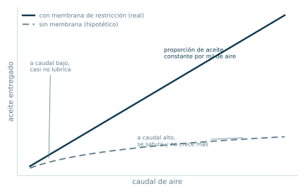
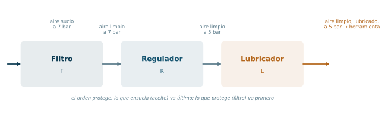
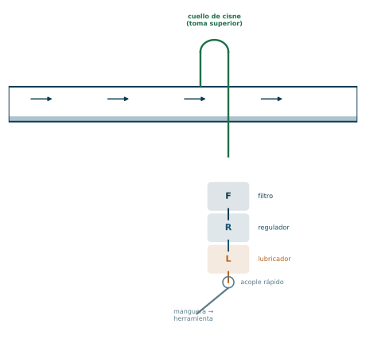

El punto de consumo: la unidad FRL
La red distribuye un aire genérico. Cada consumo necesita su propio acondicionamiento local de presión, limpieza y lubricación, y eso lo hace la unidad de mantenimiento: Filtro, Regulador, Lubricador.
Bloque 5 · Apunte de cátedra, páginas 56 a 61 · Ing. Luciano Manavella · Instalaciones Industriales, UTN FRC
De dónde venimos y a dónde vamos
El Bloque 4 nos dejó el aire en la bajante, a un metro de la herramienta. Y sin embargo todavía no está listo para entrar.
El motivo es que la red distribuye un aire genérico. Está a la presión que le conviene a la instalación completa, entre 7 y 8 bar, tratado para la clase de calidad promedio que la planta necesita, y sin aceite, porque ninguna red quiere aceite viajando por sus caños. Pero cada máquina en particular puede necesitar otra cosa: menos presión, lubricación, y una limpieza final que retire lo que la propia cañería le agregó al aire durante el viaje.
Ese acondicionamiento último y local es lo que hace la unidad de mantenimiento, que cuando trae los tres elementos se llama FRL: Filtro, Regulador, Lubricador.
Este es el último bloque de componentes. Después de esto, el aire entra a la herramienta y hace trabajo.
ℹ Lo que traés de los bloques anteriores
- Del Bloque 2, el principio del separador ciclónico: el filtro del FRL vuelve a usarlo, en versión miniatura.
- Del Bloque 4, la tubería de servicio o bajante, que es donde físicamente se monta el FRL, junto con el acople rápido.
- Del Bloque 4 también, el cuello de cisne: la unidad de mantenimiento va después de la toma superior, nunca antes.
✔ Cómo estudiar este bloque para opción múltiple
Este bloque es descriptivo: son tres componentes y sus mecanismos internos. Lo que se puede preguntar es de tres clases.
- Función de cada elemento. Qué hace el filtro, qué hace el regulador, qué hace el lubricador, y en qué orden van. Preguntas directas.
- Piezas y letras. El apunte describe la operación con referencias literales (A, B, C…). Un ítem puede pedir «el elemento que produce la depresión que aspira el aceite es…». No hace falta memorizar la letra, sí el rol de cada pieza.
- Condición de uso. Cuándo se coloca regulador y cuándo no. Ese «cuándo» está escrito de forma muy explícita en el apunte y es material de pregunta.
La estrategia rendidora acá es entender cada mecanismo como una cadena causal corta. Si entendés que el Venturi genera depresión y la depresión sube el aceite, no necesitás memorizar nada del lubricador.
Objetivos de aprendizaje
- Explicar por qué el aire de red necesita acondicionamiento local aunque ya haya sido tratado.
- Enunciar la condición precisa bajo la cual se agrega un regulador.
- Describir el recorrido del aire dentro del filtro y decir qué separa cada etapa.
- Explicar cómo el regulador mantiene constante la presión de salida, y qué hace cuando la presión secundaria se pasa del valor fijado.
- Explicar el principio Venturi del lubricador y por qué la dosificación crece con el caudal.
- Justificar el orden F → R → L.
- Distinguir el conjunto Filtro/Regulador del conjunto FRL completo.
Mapa de entrada
Filtro
Deflector → turbulencia → fuerza centrífuga → pared del vaso → gravedad → fondo → dreno. Y el elemento filtrante para lo más chico.
Regulador
Manopla → resorte → diafragma → válvula de asiento → presión secundaria constante. Exceso → orificio de equilibrio → diafragma sube → sangría → atmósfera.
Lubricador
Venturi → depresión → tubo de succión → goteo regulable → pulverización en el flujo.
Configuraciones posibles: individuales · conjunto Filtro/Regulador · FRL completo.
1. Los consumos y su conexión a la red
Los consumos dependen en gran medida del tipo de industria (automotriz, alimenticia, etc.), pero independientemente de eso, cualquiera sea el consumo, para unirlo a la red se utiliza una bajante o tubería de servicio.
Y se aplica la regla ya vista en el Bloque 4:
◆ Regla ya conocida
LA TOMA DE AIRE COMPRIMIDO DEBE HACERSE SIEMPRE DESDE LA PARTE SUPERIOR DE LA TUBERÍA, porque el condensado se encuentra en la parte inferior. Para esto se recurre a la acometida llamada cuello de cisne.
Sobre la tubería de servicio, en cada punto de consumo, se colocan las unidades de mantenimiento.
⚠ Lo que el apunte dice y lo que conviene entender
El apunte, en la página 56, escribe que en cada punto de consumo se colocan unidades de mantenimiento «(filtro y lubricador)», y en el párrafo siguiente agrega que el regulador se suma solo si la presión del consumo es inferior a la de distribución.
Es decir: el apunte trata al filtro y al lubricador como la dupla básica, y al regulador como el agregado condicional. Es útil tenerlo presente porque un ítem de opción múltiple puede preguntar exactamente eso: cuál de los tres es el que se agrega según la condición de presión.
En la práctica industrial casi siempre se pone el FRL completo, porque casi siempre el consumo trabaja por debajo de la presión de red. Pero para el parcial, atenete a la lógica del apunte.
Condición para agregar el regulador
Si la presión de funcionamiento del consumo es inferior a la presión de generación y distribución, se debe agregar una válvula reguladora (regulador).
Estos componentes pueden colocarse individualmente o todos juntos formando una única unidad llamada FRL (Filtro-Regulador-Lubricador).
⚠ Una imprecisión de vocabulario en el apunte
El apunte llama al regulador «válvula reguladora de caudal». Pero toda la descripción de funcionamiento que da a continuación (páginas 58 y 59) es la de una válvula reguladora de presión: lo que se fija con la manopla es la presión secundaria, lo que se compara en el diafragma es presión, y lo que se descarga por la sangría es el exceso de presión.
Regular caudal y regular presión son dos cosas distintas. Una válvula reguladora de caudal limita el flujo; un regulador de presión mantiene constante la presión de salida y deja pasar el caudal que haga falta para sostenerla.
Para el parcial: si un ítem reproduce la terminología del apunte, respondé según el apunte. Pero si un ítem pregunta qué magnitud mantiene constante el regulador, la respuesta es la presión, no el caudal. Es la clase de detalle que se presta a un distractor.
2. El filtro
Está diseñado para una alta eficiencia en la remoción de humedad. Gracias al sistema de deflectores, el agua y las partículas sólidas contenidas en el aire son totalmente separadas.
Una gran superficie del elemento filtrante garantiza baja caída de presión y aumenta su vida útil.
2.1 Recorrido del aire, paso a paso
| Paso | Qué ocurre | Pieza |
|---|---|---|
| 1 | El aire comprimido entra por el orificio en el cuerpo del filtro | — |
| 2 | Fluye a través del deflector superior, que provoca una acción de turbulencia | A |
| 3 | Por la acción centrífuga del aire turbulento, la humedad y las partículas sólidas son lanzadas contra la pared del vaso | C |
| 4 | Lo lanzado escurre por la pared hacia abajo por gravedad | — |
| 5 | La pantalla asegura que la turbulencia ocurra siempre que el aire pasa directamente a través del elemento filtrante | B |
| 6 | El deflector inferior separa lo depositado en el fondo del vaso y evita que reingrese al sistema | E |
| 7 | Ya sin lo grueso, el aire atraviesa el elemento filtrante, donde quedan retenidas las partículas más pequeñas | D |
| 8 | El aire vuelve al sistema; humedad y sólidos quedan en el fondo del vaso | — |
| 9 | El fondo se drena por dreno manual, accionando un obturador girándolo en sentido antihorario, o por dreno automático cuando el líquido alcanza un nivel predeterminado | F, G |
ℹ El filtro del FRL hace dos filtrados distintos, no uno
Esto es lo que más se pasa por alto y es lo más elegante del componente.
Primero separa por inercia. El deflector hace girar el aire; las gotas y las partículas grandes tienen mucha más masa que las moléculas de aire, así que no logran seguir la curva y se estrellan contra la pared. Esto no consume vida útil de ningún consumible: es geometría pura, funciona para siempre y no tapa nada.
Después filtra por barrera. Recién lo que sobrevivió al ciclón llega al elemento filtrante poroso, que retiene lo fino.
El orden importa muchísimo. Si el elemento filtrante recibiera todo el chorro, se saturaría de agua y de partículas grandes en horas. Al ponerle un ciclón adelante, le llega solo lo que un poro puede manejar. Es exactamente la misma lógica del tren de filtrado del Bloque 2, en miniatura y dentro de un solo cuerpo.
Y por eso el deflector inferior (E) es más importante de lo que parece: sin él, el propio remolino del aire volvería a levantar el agua que ya estaba decantada en el fondo, y todo el trabajo del ciclón se perdería.
⚠ Vaciar el vaso a tiempo
El apunte lo dice de forma casi accidental, pero es una condición de funcionamiento: el vaso debe ser drenado antes de que el nivel alcance la altura donde el líquido pueda retornar al flujo de aire.
Un vaso lleno no es un filtro con mucha capacidad acumulada: es un filtro que dejó de funcionar y que además está reinyectando a la herramienta todo lo que había separado.
3. El regulador
Se agrega si la presión de funcionamiento del consumo es inferior a la presión de generación y distribución.
3.1 Piezas
| Letra | Pieza |
|---|---|
| P / P' | Entrada / salida de aire comprimido |
| A | Resorte calibrado de regulación |
| B | Diafragma |
| C | Válvula de asiento |
| D | Manopla |
| E | Orificio en la tapa del regulador (descarga a la atmósfera) |
| F | Orificio de sangría, contenido en el diafragma |
| G | Orificio de equilibrio |
| H | Paso del flujo hacia la utilización |
| I | Amortiguador (de resorte o de aire comprimido) |
| J | Manómetro de presión secundaria |
| C-J | Dispositivo autocompensador |
3.2 Cómo funciona
El aire entra por P y solo puede salir por P' si la válvula de asiento está abierta. La sección de paso regulable está situada debajo de la válvula de asiento C.
Ajuste inicial. Girando totalmente la manopla D en sentido antihorario (resorte sin compresión), el conjunto de válvula de asiento C queda cerrado. Girando en sentido horario, se aplica la carga del resorte calibrado A, lo que hace que el diafragma B y la válvula de asiento C se desplacen hacia abajo, permitiendo el paso del aire hacia la utilización H.
Régimen. La presión sobre el diafragma B está balanceada a través del orificio de equilibrio G mientras el regulador está en funcionamiento.
Corrección por exceso. Si la presión secundaria excede el valor regulado, esa presión actúa a través del orificio G sobre el diafragma B, empujándolo hacia arriba contra el resorte A y abriendo el orificio de sangría F contenido en el diafragma. El exceso de aire se fuga hacia la atmósfera a través del orificio E de la tapa. Esto ocurre solamente en reguladores con sangría.
Amortiguación. El proceso de apertura y cierre de la válvula de asiento C ocasiona cierta vibración. Puede evitarse con reguladores equipados con un amortiguador I, de resorte o de aire comprimido.
Autocompensación. El dispositivo C-J permite montar el regulador en cualquier posición y le confiere un tiempo de respuesta corto.
Lectura. La presión secundaria regulada se registra a través del manómetro J.
ℹ El regulador es una balanza, no una llave
La forma más rápida de entenderlo: el diafragma B es el platillo de una balanza con dos fuerzas enfrentadas.
- Por arriba empuja el resorte A, cuya carga fijás vos con la manopla. Esa es la presión que pediste.
- Por abajo empuja la presión de salida, que llega al diafragma por el orificio de equilibrio G. Esa es la presión que hay.
Si la presión de salida baja (porque la herramienta arrancó y empezó a consumir), el resorte gana, el diafragma baja, la válvula de asiento abre más y entra más aire hasta que se equilibra. Si la presión de salida sube (porque la herramienta paró y el aire quedó encerrado), la presión gana, el diafragma sube y la válvula cierra.
Todo el mecanismo es un lazo de realimentación negativa puramente mecánico: la variable que se quiere controlar es la que actúa sobre el elemento que la controla. No hay electrónica, no hay sensor, no hay control. Hay un resorte y una membrana.
ℹ Qué agrega la sangría
Cerrar la válvula de asiento resuelve el caso de «sube la presión porque estoy metiendo de más». Pero no resuelve el caso de «ya hay aire encerrado aguas abajo a más presión de la que quiero ahora».
Eso pasa en dos situaciones reales: cuando bajás el ajuste de la manopla estando el sistema presurizado, y cuando la herramienta devuelve aire hacia el regulador. Sin sangría, ese aire no tiene salida y la presión secundaria se queda alta para siempre.
El orificio F en el diafragma es la salida de emergencia: cuando el diafragma se levanta lo suficiente, se destapa y el exceso escapa por E a la atmósfera. Por eso, al bajar el ajuste de un regulador con sangría, se escucha un soplido corto. No es una falla: es el componente haciendo su trabajo.
Los reguladores sin sangría existen y son más baratos, pero para bajar la presión hay que despresurizar la línea.
4. El lubricador
Genera la distribución proporcional del aceite en una larga franja del flujo de aire. El sistema con aguja asegura una distribución de aceite repetitiva y permite el llenado del vaso aun con la línea presurizada.
4.1 Piezas
| Letra | Pieza |
|---|---|
| A | Membrana de restricción |
| B | Orificio Venturi |
| C | Esfera (asiento de la placa inferior) |
| E | Tubo de succión |
| F | Orificio superior |
| G | Válvula de regulación del goteo |
| H | Tapón de relleno |
| I | Paso por donde gotea el aceite |
4.2 Cómo funciona
El aire fluye a través del lubricador por dos caminos.
Con caudales bajos, la mayor parte del flujo va por el orificio Venturi B, y la otra parte fluye deflectando la membrana de restricción A y al mismo tiempo presuriza el vaso a través del asiento tipo esfera de la placa inferior.
La velocidad del aire en el Venturi B provoca una depresión en el orificio superior F. Esa depresión, sumada a la presión positiva del vaso transmitida por el tubo de succión E, hace que el aceite suba y se consuma a través del conjunto de goteo.
El caudal de aceite se controla con la válvula de regulación G, y el aceite gotea a través del paso I, donde se encuentra con el flujo de aire que pasa por el Venturi B, y ahí se pulveriza.
Cuando el flujo de aire aumenta, la membrana de restricción A impide el paso por el camino secundario, forzando a que la mayor parte del aire pase por el Venturi B. Eso asegura que la distribución de aceite aumente linealmente con el incremento del caudal de aire.
Llenado en carga. El vaso puede llenarse sin despresurizar la línea gracias a la esfera C. Cuando se retira el tapón de relleno H, el aire del vaso escapa a la atmósfera y la esfera C impide el paso de aire hacia el vaso, evitando que se vuelva a presurizar. Al reponer el tapón, entra una pequeña porción de aire, y cuando el vaso está totalmente presurizado la lubricación vuelve a la normalidad.
ℹ Por qué un Venturi y no una bomba
El problema a resolver es: hay que levantar aceite desde el fondo de un vaso y meterlo en una corriente de aire a 6 bar. Poner una bomba sería absurdo para un componente que va colgado de una bajante.
La solución es usar el propio aire como bomba. Un Venturi es un estrechamiento: donde la sección se achica, la velocidad sube, y donde la velocidad sube, la presión estática baja (Bernoulli). Esa caída de presión en F es la aspiración.
Pero hay un detalle fino que hace que funcione de verdad: el vaso está presurizado por el camino secundario. Entonces el aceite tiene presión de vaso empujándolo desde arriba y depresión del Venturi tirándolo desde el otro extremo. Las dos se suman. Por eso el apunte dice «la depresión sumada a la presión positiva del vaso».
ℹ La membrana de restricción es lo que hace la dosificación proporcional
Este es el punto más ingenioso del componente y el más probable de aparecer en un ítem conceptual.
Si el lubricador fuera solo un Venturi fijo, la cantidad de aceite dependería de la velocidad del aire de forma no lineal, y a caudal bajo casi no aspiraría nada. El resultado sería una herramienta que se queda sin aceite cuando trabaja despacio y que se ahoga cuando trabaja rápido.
La membrana A resuelve eso repartiendo el flujo: a caudal bajo deja pasar aire por el camino secundario, quitándole caudal al Venturi; a caudal alto se cierra y manda todo al Venturi. El efecto neto es que la depresión en F crece de manera controlada y el aceite entregado aumenta linealmente con el caudal de aire.
Traducido: la herramienta recibe siempre la misma proporción de aceite por metro cúbico de aire, trabaje rápido o despacio. Eso es lo que el apunte llama «distribución proporcional» y «repetitiva».

5. Los conjuntos
5.1 Conjunto Filtro/Regulador
Hay válvulas reguladoras integradas con filtros, ideales para lugares compactos. Economizan espacio, porque ofrecen filtro y regulador en un solo conjunto para un desempeño óptimo. Combina las características de ambos en un solo elemento (Fig. 58, p. 61).
5.2 Conjunto Filtro/Regulador/Lubricador (FRL)
Cuando es necesario utilizar los tres elementos, es posible unirlos formando una unidad conocida como FRL. Igual que en el caso anterior, se optimiza el espacio requerido para el montaje (Fig. 59, p. 61).

ℹ Por qué el orden es F → R → L y no otro
El nombre del componente es también el orden del flujo, y cada posición tiene una razón:
El filtro va primero porque es el único que protege a los otros dos. El regulador tiene un asiento de precisión y un diafragma delgado; una partícula de óxido de la cañería puede trabar el asiento o perforar la membrana. Lo mismo el lubricador, con sus orificios finos. Todo lo sucio se detiene en el primer componente.
El lubricador va último por dos motivos. Si fuera antes del filtro, el filtro le sacaría el aceite que acabás de agregar, que es justo lo que el filtro está diseñado para hacer. Y si fuera antes del regulador, el aceite pulverizado se depositaría en el asiento y el diafragma, ensuciando el mecanismo de control.
El regulador queda en el medio por descarte, pero además es donde tiene sentido: recibe aire limpio, que es lo que necesita para regular con precisión, y entrega aire ya a la presión de trabajo, de modo que el lubricador dosifica sobre el caudal real que va a usar la herramienta.
Si te preguntan el orden y dudás, reconstruilo así: lo que protege va primero, lo que ensucia va último.
ℹ Ampliación Ampliación — cuándo NO se pone lubricador
El apunte no lo trata, pero vale la pena saberlo porque explica por qué existen conjuntos Filtro/Regulador sin la L.
Hay aplicaciones donde el aceite en el aire es inaceptable: industria alimenticia, farmacéutica, pintura, instrumentación, y en general cualquier proceso donde el aire toca el producto. Ahí se trabaja con aire no lubricado y con herramientas y cilindros de lubricación permanente, que traen su grasa de fábrica sellada.
Ese es el caso que conecta con la Clase 0 de la norma ISO 8573-1 que viste en el Bloque 0: no se trata solo de filtrar el aceite del compresor, sino de no volver a agregarlo nunca aguas abajo. Un FRL completo en una línea de aire clase 0 arruinaría todo el tren de tratamiento en el último medio metro.
Y hay una regla práctica que se desprende de esto: una vez que lubricás una línea, ya no podés volver atrás. El aceite queda impregnado en las paredes de las mangueras y en los sellos. Por eso la decisión de lubricar o no se toma al proyectar el circuito, no después.

6. Datos duros para memorizar
| Dato | Valor |
|---|---|
| Significado de FRL | Filtro – Regulador – Lubricador |
| Unidad de mantenimiento básica según el apunte | Filtro y lubricador |
| Condición para agregar el regulador | Presión del consumo inferior a la de generación y distribución |
| Dónde se monta el FRL | Sobre la tubería de servicio (bajante), en cada punto de consumo |
| Cómo se hace la toma de la red | Por arriba, cuello de cisne |
| Filtro: qué provoca el deflector superior | Turbulencia ⇒ separación centrífuga |
| Filtro: qué retiene el elemento filtrante | Las partículas más pequeñas |
| Filtro: función del deflector inferior | Evitar que lo depositado reingrese al sistema |
| Filtro: sentido de giro del obturador del dreno manual | Antihorario |
| Filtro: efecto de una gran superficie filtrante | Baja caída de presión y mayor vida útil |
| Regulador: manopla totalmente antihoraria | Válvula de asiento cerrada (resorte sin compresión) |
| Regulador: por dónde escapa el exceso | Sangría F en el diafragma, hacia atmósfera por E |
| Regulador: qué permite el autocompensador C-J | Montaje en cualquier posición y respuesta rápida |
| Regulador: para qué el amortiguador I | Evitar la vibración del ciclo de apertura y cierre |
| Lubricador: principio de aspiración | Venturi (depresión) + presión positiva del vaso |
| Lubricador: qué hace la membrana de restricción A | Que el aceite aumente linealmente con el caudal de aire |
| Lubricador: qué permite la esfera C | Llenar el vaso con la línea presurizada |
| Conjunto para lugares compactos sin lubricación | Filtro/Regulador |
7. Trampas típicas de opción múltiple
| Se confunde… | Con… | Cómo distinguirlos |
|---|---|---|
| El regulador regula presión | «regula caudal» (como lo llama el apunte) | Todo el mecanismo compara y ajusta presión secundaria. |
| Sentido antihorario de la manopla ⇒ cerrado | ⇒ abierto | Antihorario = resorte sin compresión = cerrado. |
| Orificio de equilibrio G | Orificio de sangría F | G transmite la presión al diafragma. F descarga el exceso. |
| Orificio E (tapa) | Orificio F (diafragma) | F se abre; E es por donde sale a la atmósfera. |
| Deflector superior A | Deflector inferior E | A genera la turbulencia; E impide el reingreso de lo decantado. |
| Elemento filtrante D retiene todo | Retiene solo lo más pequeño | Lo grueso ya lo sacó el ciclón. |
| Membrana de restricción A del lubricador | Diafragma B del regulador | Distintos componentes, misma letra en un caso y letra parecida en el otro. Ojo con esto. |
| El lubricador aspira solo por Venturi | Venturi más presión del vaso | El apunte dice explícitamente que se suman. |
| Orden L → R → F | Orden F → R → L | Lo que protege va primero, lo que ensucia va último. |
En resumen
El aire de la red es genérico: viene a 7 u 8 bar, sin aceite, y con lo que la cañería le agregó en el viaje. Cada consumo necesita su propio acondicionamiento, y eso lo hace la unidad de mantenimiento, montada sobre la bajante, después de la toma superior con cuello de cisne.
El filtro separa en dos etapas. Primero, el deflector superior (A) genera turbulencia y la fuerza centrífuga lanza agua y partículas contra la pared del vaso (C), de donde escurren al fondo; el deflector inferior (E) impide que vuelvan al flujo. Después, el elemento filtrante (D) retiene las partículas más pequeñas. Una gran superficie filtrante significa baja caída de presión y más vida útil. El vaso se drena manualmente con el obturador (G) girando en sentido antihorario, o con dreno automático, y debe vaciarse antes de que el líquido pueda reingresar al flujo.
El regulador se agrega si la presión del consumo es inferior a la de generación y distribución. Funciona como una balanza: el resorte (A), cargado con la manopla (D), empuja el diafragma (B) hacia abajo abriendo la válvula de asiento (C); la presión de salida, transmitida por el orificio de equilibrio (G), empuja hacia arriba. Si la presión secundaria se pasa, el diafragma sube, se abre la sangría (F) y el exceso escapa a la atmósfera por (E). El amortiguador (I) evita vibraciones, el dispositivo autocompensador (C-J) permite montarlo en cualquier posición con respuesta rápida, y el manómetro (J) indica la presión regulada.
El lubricador usa un Venturi (B): la velocidad del aire genera una depresión en (F) que, sumada a la presión del vaso transmitida por el tubo de succión (E), hace subir el aceite. El goteo se ajusta con la válvula (G) y el aceite se pulveriza al encontrarse con el aire. La membrana de restricción (A) cierra el camino secundario cuando sube el caudal, forzando todo el flujo por el Venturi y logrando que el aceite entregado crezca linealmente con el caudal de aire. La esfera (C) permite rellenar el vaso sin despresurizar la línea.
Los tres pueden montarse por separado, como conjunto Filtro/Regulador para lugares compactos, o como FRL completo. El orden de flujo es siempre F → R → L.
Banco de preguntas de opción múltiple
Formato tipo parcial. Respondé una a la vez: el feedback aparece apenas elegís una opción.
Conexión con el Bloque 6
Con esto queda descripto el sistema completo, componente por componente: se genera el aire, se lo trata, se lo almacena, se lo distribuye y se lo acondiciona en cada punto de uso.
Lo que falta ahora es lo que convierte a esa descripción en un proyecto: los números.
¿Cuánto aire necesita realmente la planta, si nunca funcionan todas las máquinas a la vez? ¿Qué diámetro tiene que tener cada tramo? ¿Cuánta presión se pierde en el camino y cuánta se puede permitir perder? ¿Qué compresor se elige entre los varios que podrían servir? ¿Dónde se lo pone y cómo se ventila la sala?
El Bloque 6 responde todo eso, y es donde todos los bloques anteriores se usan al mismo tiempo.
◆ Figuras del apunte pendientes de incorporar
Estas figuras están citadas en el texto pero todavía no se recortaron del PDF de cátedra: Fig. 54 (p. 56, tipos de consumos conectados a la red), Fig. 55 (p. 57, corte del filtro, ref. A a G), Fig. 56 (p. 59, corte del regulador, ref. A a J y P/P'), Fig. 57 (p. 60, corte del lubricador, ref. A a I), Fig. 58 (p. 61, conjunto Filtro/Regulador) y Fig. 59 (p. 61, conjunto FRL). Los tres gráficos de elaboración propia de este bloque (diagrama de bloques F-R-L, recta de dosificación del lubricador y esquema de montaje en la bajante) ya están incorporados arriba.
Bloque 5 de la unidad de Aire Comprimido · Instalaciones Industriales · Ing. Luciano Manavella · UTN Facultad Regional Córdoba.
Figuras 54 a 59 del apunte de cátedra, pendientes de recortar e incorporar. Los gráficos en color son de elaboración propia.